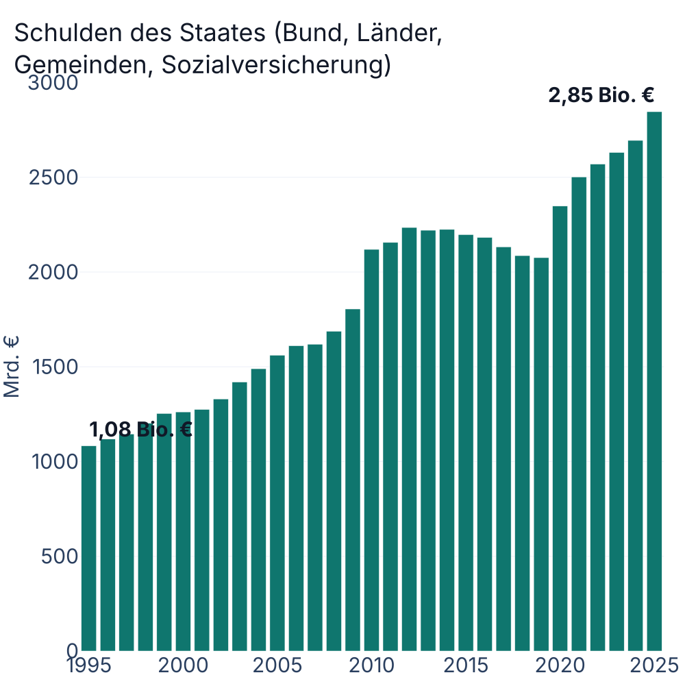
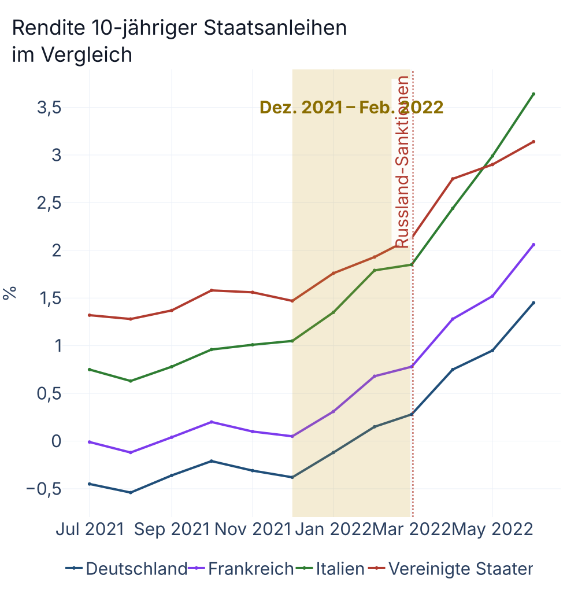
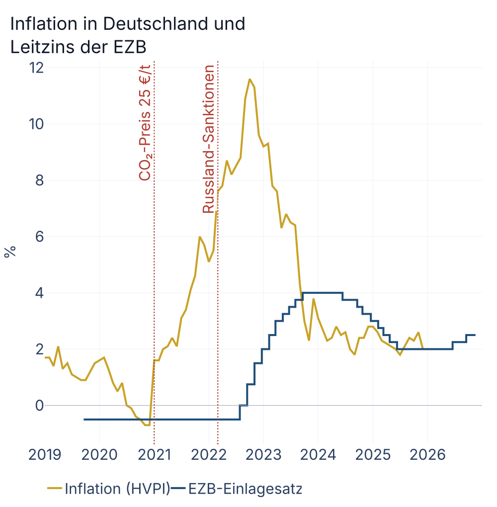
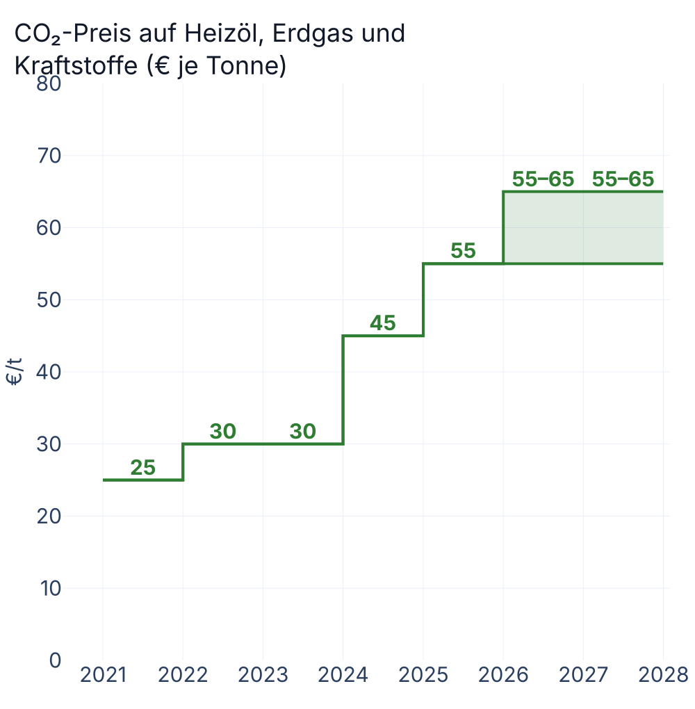
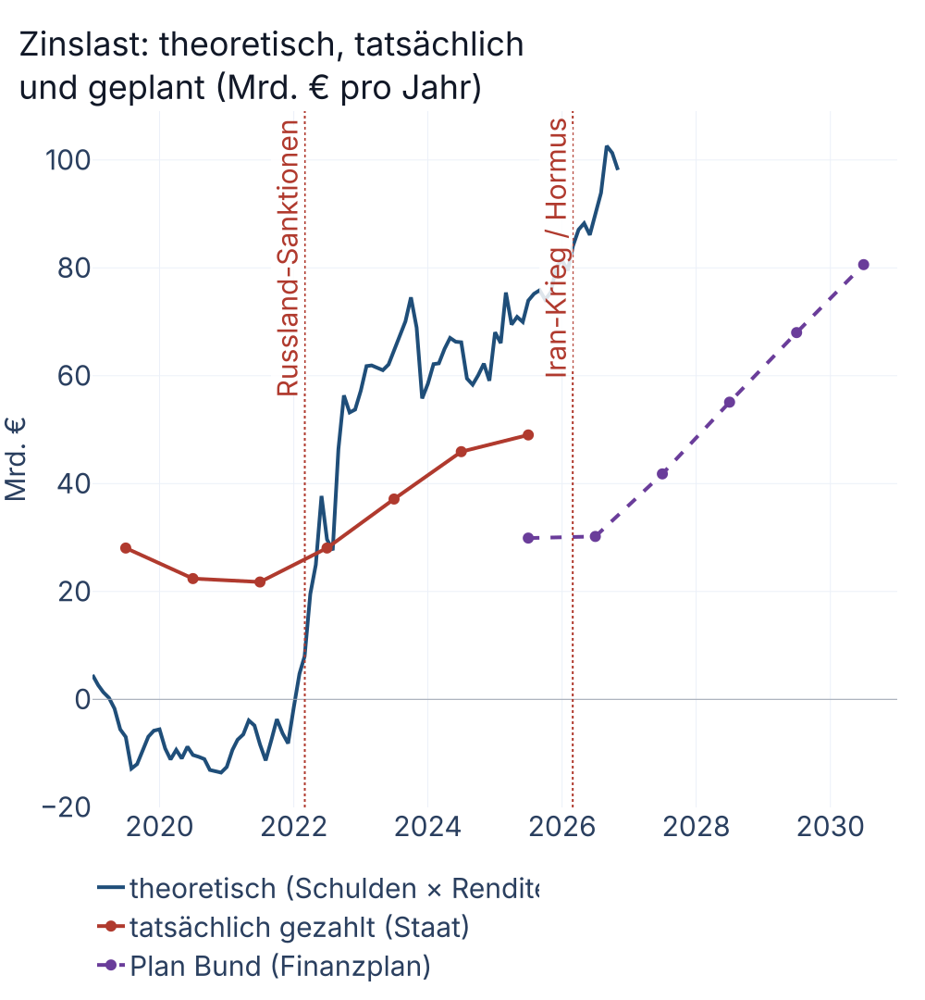
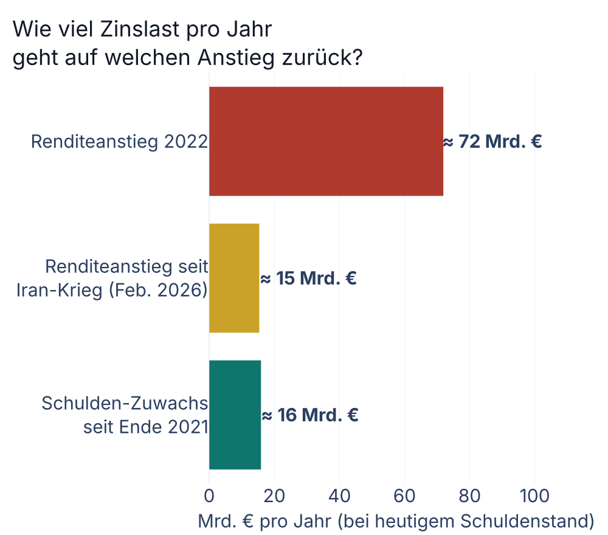

Zinsen pro Jahr – woher kommt das?
Und stimmt die Erklärung der Bundesregierung, der Iran-Krieg habe die Zinsen getrieben?
Eine Spurensuche in öffentlichen Daten.
Datenstand: 17. November 2026
Knapp 3 Billionen Euro Schulden

– das 2,6-Fache. Bis November 2026 fortgeschrieben: ≈ 2,97 Bio. €.
Mehr Ausgaben als Einnahmen

Zinsen (80,6 Mrd. €) und Rente (164,5 Mrd. €) beanspruchen 2030 zusammen 56 % der Steuereinnahmen des Bundes.
Was die Bundesregierung schreibt
„Der Anstieg der Zinsausgaben ist wesentlich auf den erhöhten Schuldenstand sowie auf gestiegene Renditen für Bundeswertpapiere zurückzuführen, die sich aufgrund des Irankriegs und der damit gestiegenen Inflation bzw. Inflationserwartung erhöht haben.“
Finanzplan des Bundes 2026–2030, Abschnitt 4.4.1 Zinsausgaben
Schauen wir in die Daten.
Der große Sprung kam 2022

Die Rendite stieg vorher – überall gleichzeitig

Der frühe Anstieg war kein deutscher Sonderweg: Weltweit stieg die Inflation, die Märkte erwarteten die Zinswende der Notenbanken.
Erst die Inflation, dann die Zinswende

Der CO₂-Preis heizte die Inflation mit an

Auf die Zinsen wirkt der CO₂-Preis nur indirekt – über die Inflation und damit über die Erwartungen an die EZB. Den weltweiten Renditeanstieg Anfang 2022 erklärt er nicht.
+65 Milliarden in zehn Monaten

Warum wir es erst jetzt spüren
Der Staat leiht sich über Anleihen mit 10, 20 oder 30 Jahren Laufzeit. Erst wenn alte, billige Anleihen auslaufen, muss er sie zum neuen, höheren Zins ersetzen.
Das Problem holt uns ein – und belastet künftige Haushalte und Generationen.
2022 wiegt fast fünfmal so schwer wie der Iran-Krieg

Was die Daten zeigen
- Der Staat hat knapp 3 Billionen Euro Schulden – das 2,6-Fache von 1995.
- Die Kosten neuer Schulden sind 2022 um 2,4 Prozentpunkte gestiegen, in allen großen Volkswirtschaften gleichzeitig. Seit Februar 2026 kamen 0,5 Prozentpunkte hinzu.
- Zu heutigen Marktzinsen kostet der Schuldenstand ≈ 98 Mrd. € pro Jahr. Gezahlt wird mit Verzögerung: 2025 waren es 49 Mrd. €, der Bund plant für 2030 80,6 Mrd. €.
- 2030 kann der Bund 167 Mrd. € seiner Ausgaben nicht aus Einnahmen decken; Zinsen und Rente binden 56 % seiner Steuereinnahmen.
- Die höheren Zinsen von heute belasten die Haushalte der kommenden Jahrzehnte.
Woher die Zahlen kommen
- Schuldenstand, Zinsausgaben, Einnahmen des Staates: Eurostat gov_10dd_edpt1, gov_10a_main (CC BY 4.0)
- Rendite der 10-jährigen Bundesanleihe: Deutsche Bundesbank, Reihe BBSSY.D.REN.EUR.A630.000000WT1010.A
- Renditen im Vergleich: Eurostat irt_lt_mcby_m; USA: FRED IRLTLT01USM156N
- Inflation: EZB ICP (HVPI); Leitzinsen: EZB FM
- CO₂-Preis: § 10 Abs. 2 BEHG; 2026/2027 Preiskorridor (2027 vom Bundestag am 15.10.2026 beschlossen, Verkündung ausstehend); Emissionsfaktoren: EBeV 2030 Anlage 2
- Bundeshaushalt: Finanzplan des Bundes 2026–2030, Drucksache 21/7301
- Theoretische Zinslast: Modell aus Schuldenstand × Marktrendite – keine Prognose der tatsächlichen Zinsausgaben
Interaktiv: App „Haushaltssimulator“, Seite Haushalt & Zinsen.